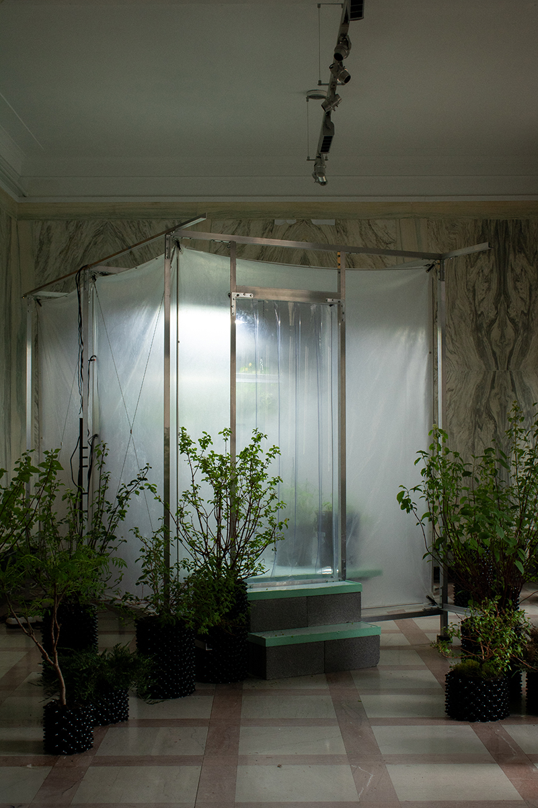
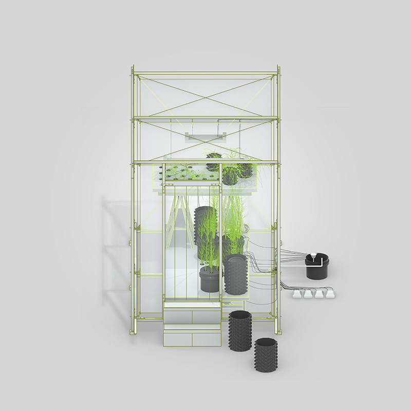
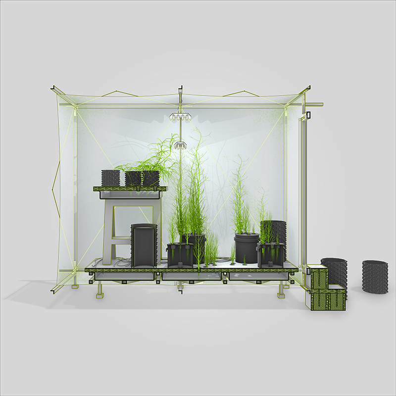
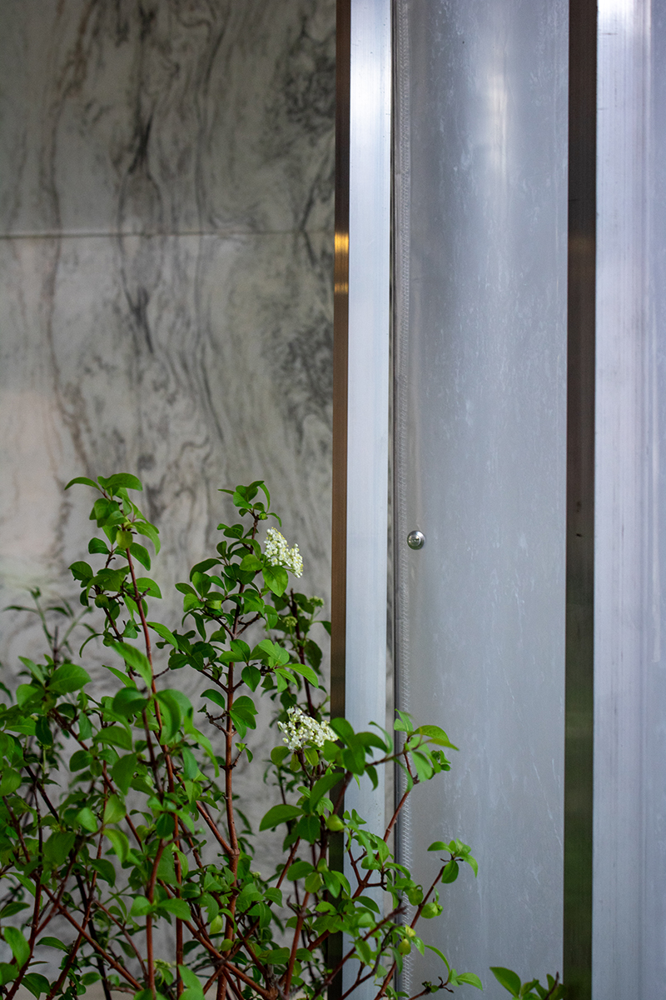
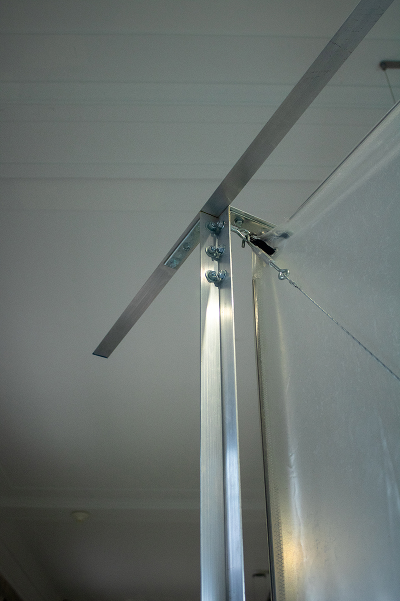
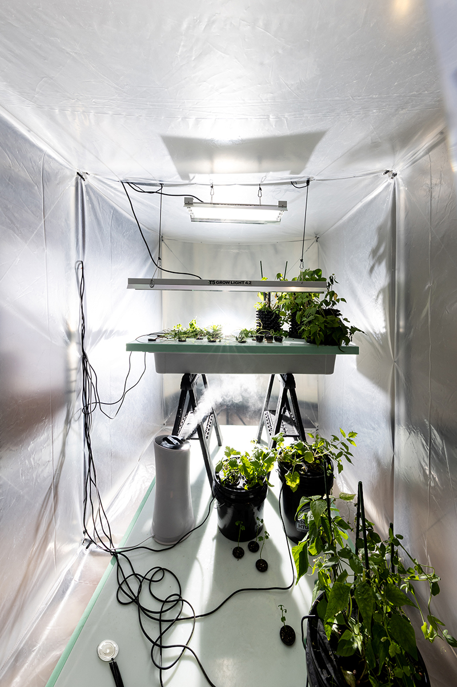
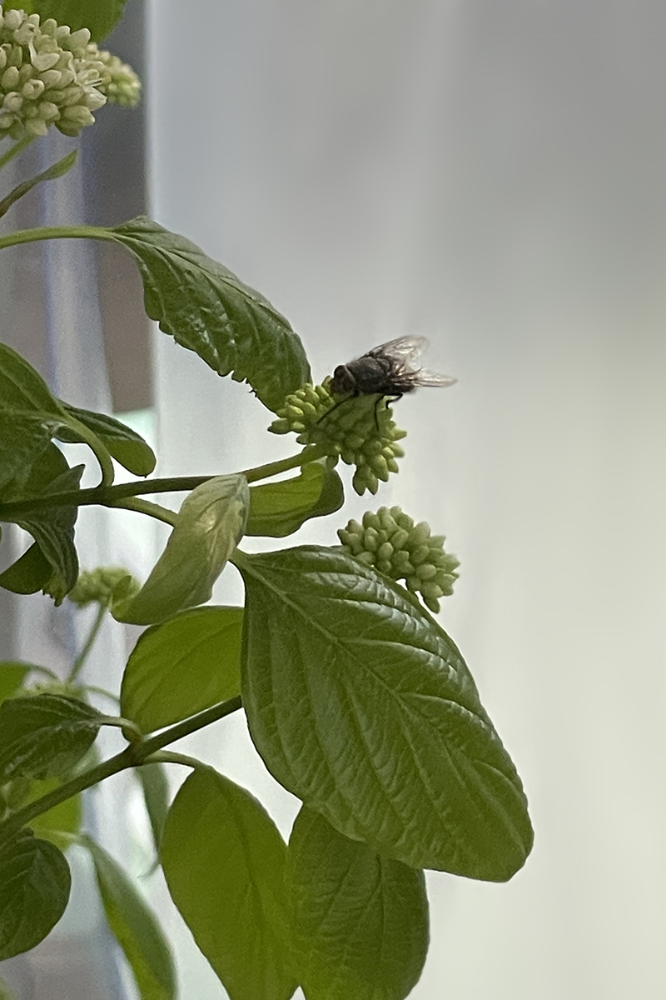

Greenhouse Prototype 1 is a 300-cubic ft. kitchen garden designed to produce and sustain life during a harsh northern winter. It is constructed using a light aluminum frame and a shrink wrap plastic envelope. Its off-the-shelf components are assembled around a thickened horizontal slab that serves as a habitat for a network of fruit-bearing garden plants. Pumped through this slab, 120L of chemical solution saturated with nitrogen, phosphorus, and potassium, feed and aerate the kitchen ecosystem. Greenhouse Prototype 1 is a speculative inquiry into new relationships between architectural technology–lights, humidity, air pumps, plastics, metals, chemical fertilizers–and botanical life. It explores the material and aesthetic stakes of bringing plants, and other nonhumans, into our projects and conversations.





